Estudo Técnico Comprova a Performance dos Canhões de Névoa Suppress no Porto Sudeste
Seis meses de monitoramento constante confirmam a alta eficiência dos equipamentos Suppress na supressão de particulado em pátios portuários.
Legislação, normas, ESG e tecnologia para quem decide sobre controle de poeira industrial.

Cases de Sucesso
Da Fundação Renova à Vale: como os canhões de névoa Suppress resolveram desafios reais de poeira em operações de mineração de diferentes portes e setores.
Seis meses de monitoramento constante confirmam a alta eficiência dos equipamentos Suppress na supressão de particulado em pátios portuários.
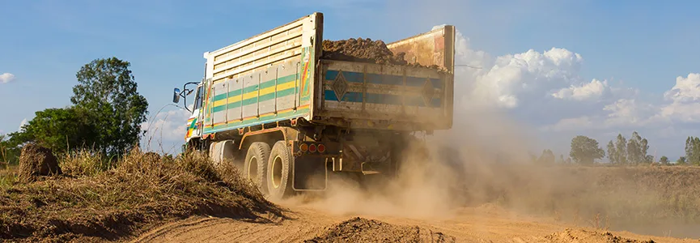
Soluções eficientes para um ambiente mais seguro, sustentável e em conformidade com as normas ambientais.
Da Fundação Renova à Vale: como os canhões de névoa Suppress resolveram desafios reais de poeira em operações de diferentes portes e setores.

Um marco que reflete o sucesso de uma tecnologia inovadora e sustentável, adotada por mineradoras, siderúrgicas, pedreiras e construtoras em todo o Brasil.
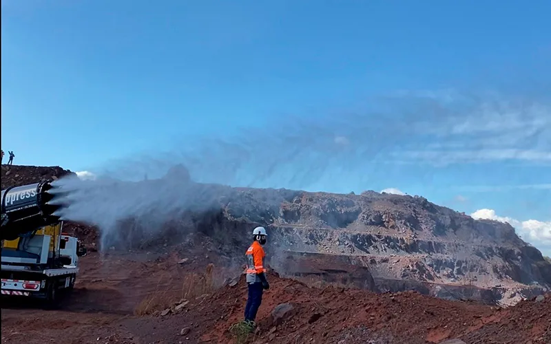
Mais água não significa melhor performance, entenda como a tecnologia Suppress otimiza o alcance e a eficiência no abatimento de poeira.
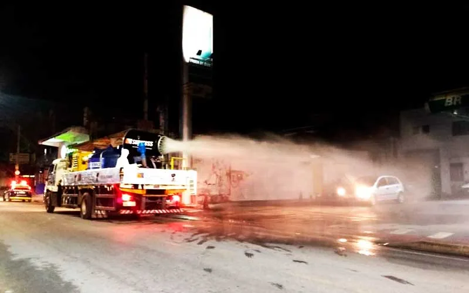
A nebulização de alta performance ganhou destaque internacional como ferramenta de desinfecção em larga escala.
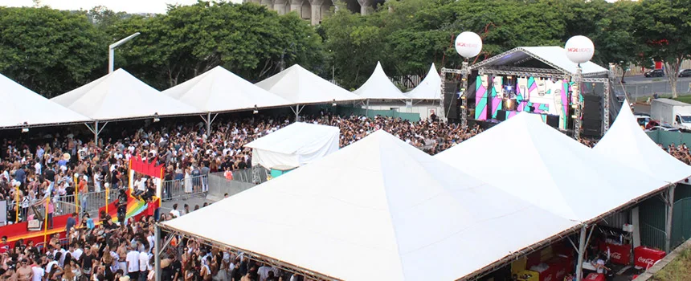
Tecnologia de névoa fina reduz a sensação de calor em festivais e eventos ao ar livre sem molhar o público.
Tecnologia de névoa fina reduz poeira em currais e confinamentos, melhorando o bem-estar animal e a produtividade da operação.
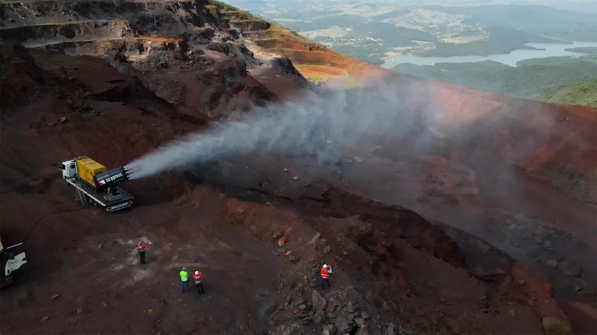
Equipamentos projetados para umectação e evaporação acelerada, com aplicação real em barragem de mineração.
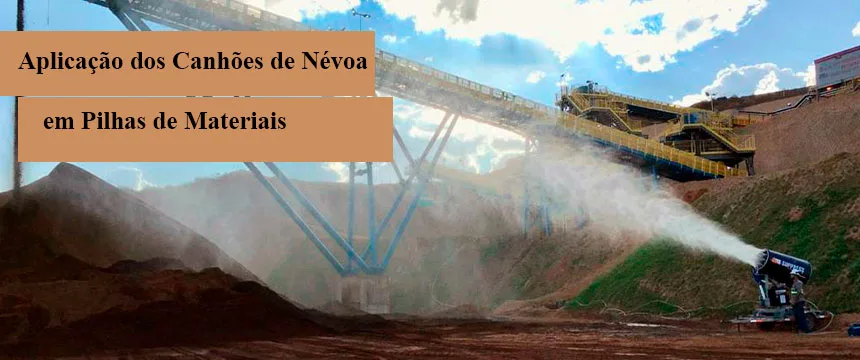
Torres, plataformas ou instalação direta ao solo: como escolher a melhor forma de instalação para sua pilha.

Climatização eficiente, sem desperdício de água e sem favorecer a proliferação de fungos no gramado.

Como a atomização de água no ar resolve o que a aspersão no solo não consegue controlar.

Equipamentos projetados, fabricados e testados no Brasil para garantir operação segura e dentro da legislação.
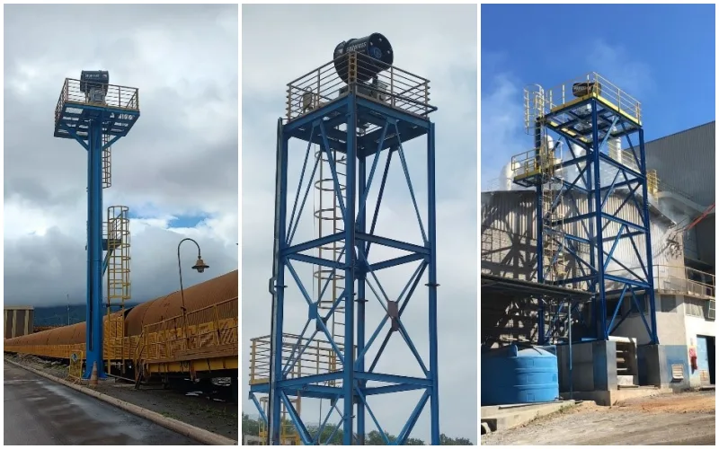
Altura, alcance e cobertura: entenda como o posicionamento em torres amplia a eficiência do controle de poeira.
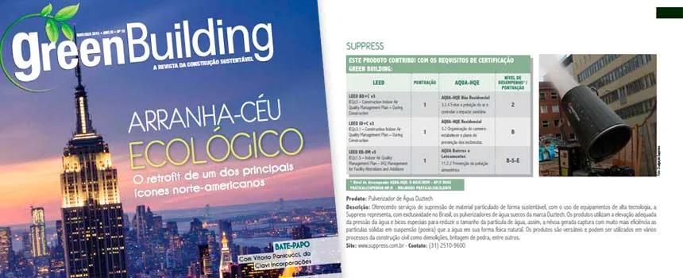
Como o controle de poeira em canteiros de obras ajuda construtoras a alcançar certificações ambientais reconhecidas internacionalmente.

Da extração do calcário ao forno de clinquerização, entenda os desafios ambientais da indústria cimenteira.

Canhão de névoa, tanque de água e espaço para gerador em um único conjunto, com total autonomia em qualquer frente de trabalho.

Como a nebulização industrial atua na fonte para reduzir a exposição à sílica cristalina respirável.
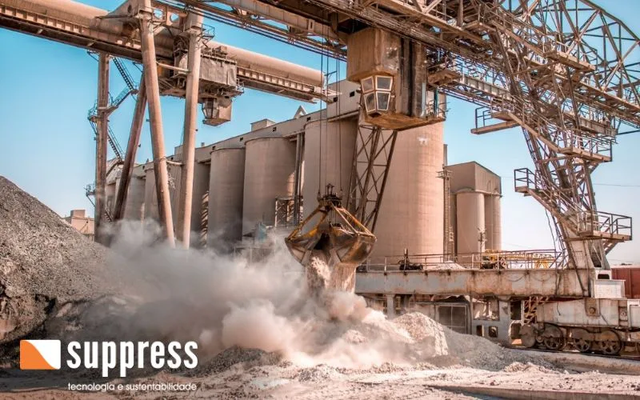
Saúde, qualidade, eficiência e reputação: entenda os custos ocultos da poeira não controlada.

Estudo de campo em fazendas de Minas Gerais revela o impacto do clima tropical sobre a saúde e a produtividade do gado leiteiro.

Tecnologia de evaporação mecanicamente aprimorada para reduzir volumes de água residual com eficiência e responsabilidade ambiental.
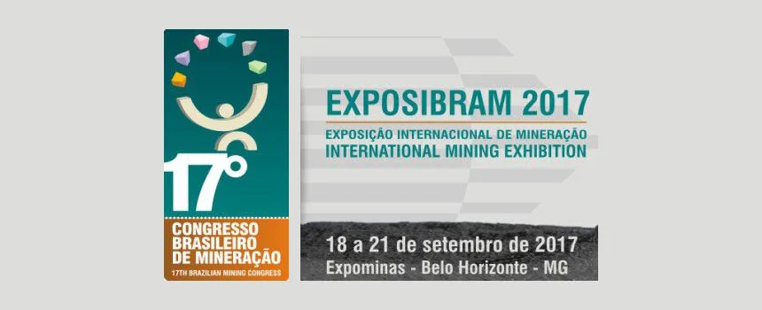
A empresa esteve presente na EXPOSIBRAM, um dos maiores eventos do setor mineral da América Latina, apresentando suas soluções de despoeiramento.

Investimento de R$ 2,5 milhões em aspersores reforça o compromisso ambiental da siderúrgica em sua unidade mineira.

Da extração ao beneficiamento, conheça os principais desafios ambientais do setor e como a tecnologia pode mitigá-los.
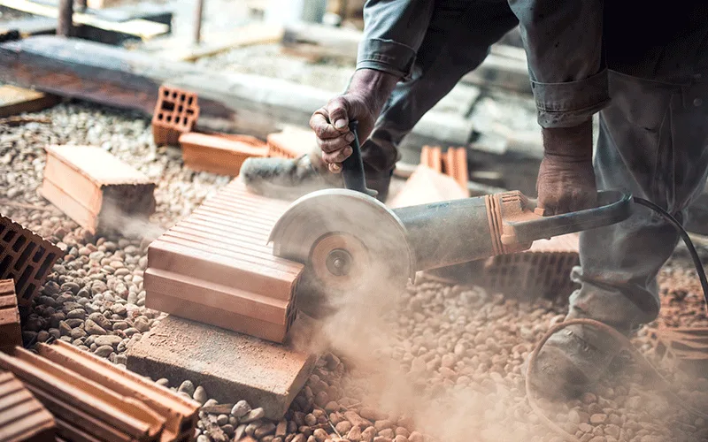
Um inimigo muitas vezes invisível, mas que compromete a saúde dos trabalhadores e a integridade dos equipamentos industriais.
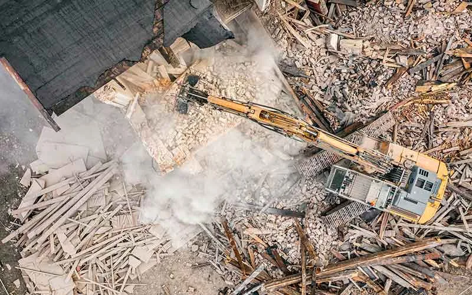
Em obras e demolições, a poeira em suspensão se tornou tão comum que muitos deixaram de enxergá-la como um risco real.
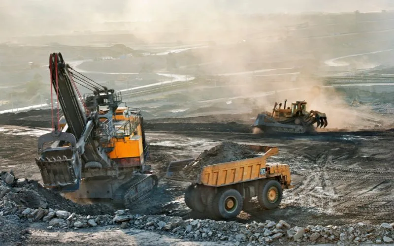
A convivência entre operações de mineração e áreas urbanas densamente povoadas exige controle rigoroso de particulado.

Conheça os principais tipos de poeira gerados em operações industriais e por que o controle é essencial para a saúde dos trabalhadores.

Fontes de geração, impactos sobre trabalhadores e meio ambiente, e o que dizem as normas brasileiras.

Uma atua no solo, a outra no ar. Entenda a diferença entre as duas tecnologias e quando combiná-las.
Por que o controle de particulado deixou de ser opcional e passou a ser exigência de mercado, investidores e sociedade.
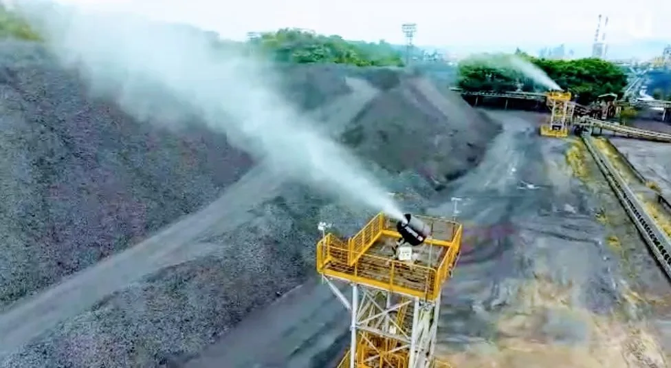
Equipamentos Suppress integram esforço siderúrgico de grande porte no controle de emissões fugitivas.
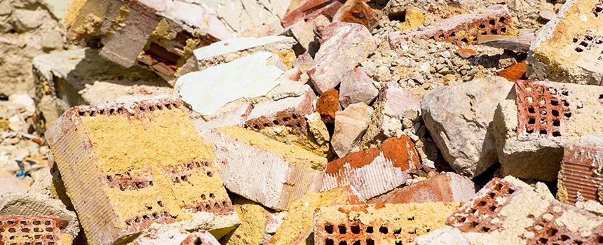
Planejamento e equipamentos adequados evitam dois dos maiores problemas em reformas de edifícios habitados.
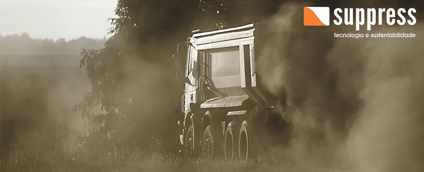
Entenda os diferentes tipos de poeira gerados em atividades industriais e rurais e seus impactos sobre a saúde respiratória.
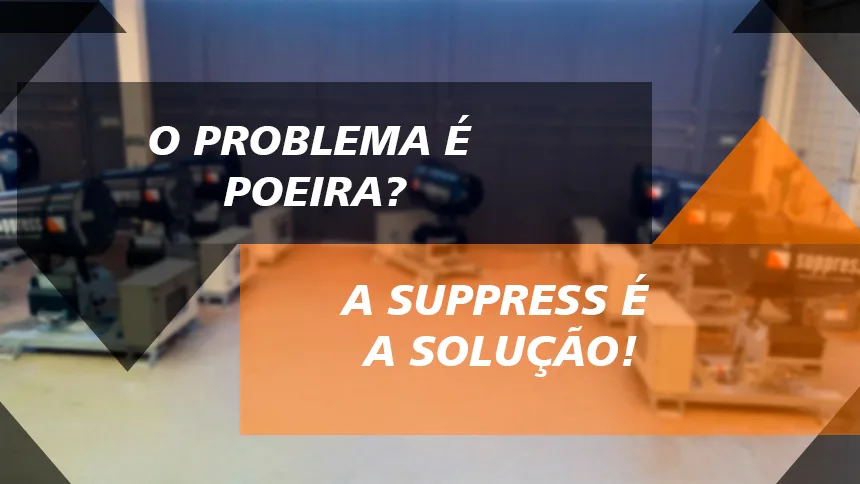
Engenharia, robustez e customização: o padrão técnico por trás de cada canhão de névoa Suppress.

Conheça o SP-150e, modelo de grande vazão de água desenvolvido para demandas de evaporação e gestão de barragens.

De importadora de equipamentos suecos a fabricante nacional: a trajetória que consolidou a engenharia própria da Suppress.
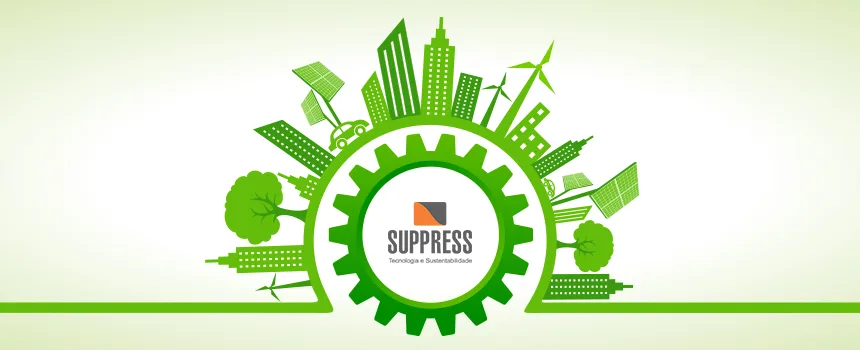
Como a consciência ambiental se tornou fator decisivo na reputação e na escolha de fornecedores pelo mercado.

Por que o controle de poeira é estratégico para a saúde, a conformidade legal e a reputação das empresas.
A Suppress oferece a possibilidade de testar seus equipamentos na sua operação antes de concluir a compra.